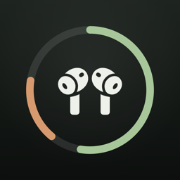

耳機時間會讀取健康 App 的耳機音訊紀錄，替每副耳機算出佩戴時間、日平均與音量。
遇到問題或有建議，歡迎寄信到 mail@wutoby.com。來信時附上 iPhone 型號、iOS 版本和問題的截圖，可以更快幫你解決。
請確認兩件事：
1. iPhone 有在記錄耳機音量：設定 › 聲音與觸覺回饋 › 耳機安全性，打開「測量耳機音訊」。
2. 允許 App 讀取：健康 App › 右上角頭像 › App › 耳機時間，打開「耳機音訊音量」。
設定好之後，戴耳機聽一段時間，再回到 App 下拉重新整理。
健康 App 從 iOS 13 開始記錄耳機音量，只要紀錄還在，App 都能讀到。換新手機時，健康資料需要透過 iCloud 或加密備份轉移才會保留。
每次打開 App 都會自動同步新的紀錄，也可以下拉畫面或到「設定 › 立即同步」手動更新。健康 App 有時會延遲幾分鐘才寫入最新的聆聽紀錄。
以「有聆聽紀錄的日子」為準，而且不含還沒過完的今天，所以沒戴耳機的日子不會把平均拉低。
不會。總時間會把重疊的時段合併，只算一次。
預設是 80 dB，可以在「設定 › 太大聲的門檻」改成 75 或 85 dB。WHO 建議 80 dB 的音量每週不要超過 40 小時。
名稱是依健康 App 記錄的型號自動辨識的。在「耳機」頁點進那副耳機，按右上角的筆就能重新命名。
可能是曾經短暫連過你手機的耳機。到「設定 › 顯示的耳機」把它關掉，它就不會算進任何統計。
代表健康 App 沒有那副耳機的音量紀錄。部分非 Apple 耳機或透過其他裝置連接時，iPhone 可能不會記錄。到「設定 › 重新讀取全部」可以重新讀一次。
在「首頁」按右上角的分享鍵，選 7 天、30 天或全部，再按「分享圖片」，就能傳給朋友或存到相簿。
不會。所有資料只在你的 iPhone 上處理，詳細內容請看 隱私權政策。